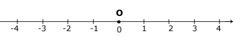
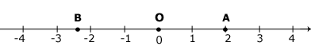

|
–ациональные числа удобно изображать на пр€мой линии. ƒл€ этого достаточно вз€ть на пр€мой какую-нибудь точку ќ (еЄ называют начальной или нулевой), в обе стороны от неЄ отложить равные отрезки и их концы обозначить числами (с одной стороны Ц положительными, с другой Ц отрицательными), как показано на рисунке.

аждому рациональному числу на такой пр€мой будет соответствовать определЄнна€ точка. Ќапример, числу 2 соответствует точка ј, числу -2,3 Ц точка ¬.

ќтрезок пр€мой от нул€ до единицы называют единичным отрезком.
ѕр€ма€, на которой выбраны начало отсчета, положительное направление и единичный отрезок, называетс€ координатной пр€мой.
Ќа координатной пр€мой каждому рациональному числу соответствует единственна€ точка.
„исло, соответствующее данной точке на координатной пр€мой, называетс€ координатой этой точки.
|